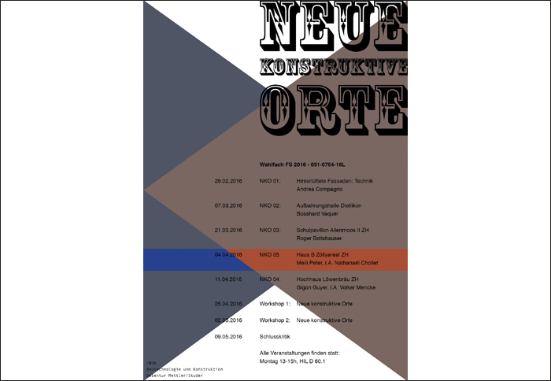

16.04.2016 LECTURE / BUK BAUTECHNOLOGIE UND KONSTRUKTION ETHZ
Nathanaël Chollet presents the housing project Haus B, Zölly (ZH) in the name of the office Meili Peter architects. Main topic: ceramic facade elements.
Nathanaël Chollet presents the housing project Haus B, Zölly (ZH) in the name of the office Meili Peter architects. Main topic: ceramic facade elements.